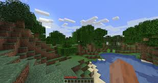

¿Qué es Minecraft?
Introducción a un juego sandbox cúbico. Minecraft es un juego formado por bloques, criaturas y comunidades. La elección es tuya: sobrevivir a la noche o crear una obra de arte. Pero, si te abruma tener que explorar un nuevo y vasto mundo por tu cuenta, ¡no temas! ¡Vamos a explorar de qué va Minecraft!
¿Que diferencia hay entre Java y bedrock?
Las ediciones Java y Bedrock de Minecraft presentan diferencias clave en su funcionamiento y características. Java es la versión original, enfocada en la personalización y los mods, mientras que Bedrock es multiplataforma y se enfoca en la accesibilidad y el juego en línea. Diferencias principales: Plataformas: Java es exclusivamente para PC (Windows, Mac, Linux), mientras que Bedrock es multiplataforma (PC, consolas, dispositivos móviles). Modificación: Java permite una amplia gama de modificaciones con mods, texturas y otros contenidos creados por la comunidad. Bedrock tiene un mercado de contenido, pero las modificaciones son más limitadas. Juego en línea: Bedrock ofrece juego cruzado entre diferentes plataformas, mientras que Java solo permite juego entre usuarios de PC. Foro de mundo: Java utiliza el formato Anvil, mientras que Bedrock utiliza el formato LevelDB. Funcionalidades: Java ofrece capacidades de redstone más avanzadas, mientras que Bedrock tiene algunas características únicas como la compatibilidad con Ray Tracing. Servidores: Java permite crear servidores gratuitos y de terceros, mientras que Bedrock tiene una lista de servidores destacados y servidores privados a través de Realms Plus. Interfaz: Java tiene una interfaz de usuario ligeramente diferente y no es compatible con Bedrock.Aqui puedes descargar Minecraft Oficial!!!
Descargar MinecraftEn Minecraft, los principales modos de juego son: Modo Supervivencia (Survival):
En este modo, los jugadores deben recolectar recursos, construir refugios y sobrevivir a las amenazas del mundo, como monstruos. Se juega con una barra de salud y hambre, lo que hace que el jugador tenga que estar atento a su bienestar físico.
Modo Creativo (Creative):
En el modo creativo, los jugadores tienen acceso ilimitado a todos los bloques y objetos del juego, lo que les permite construir y explorar sin restricciones. No hay necesidad de preocuparse por la salud o el hambre, y los jugadores pueden volar.Modo Aventura (Adventure):
El modo aventura es similar al modo supervivencia, pero con restricciones en el uso de bloques, lo que está orientado a mapas personalizados y aventuras creadas por otros jugadores. Es ideal para experiencias más guiadas y desafiantes.
Modo Espectador (Spectator):
Los jugadores en este modo pueden volar a través del mundo, observarlo todo desde cualquier perspectiva, pero no interactuar directamente con el entorno. Es útil para explorar sin participar activamente.
Primeros Pasos
Una guía paso a paso para el primer día de juego:
Crear un mundo nuevo.
Conseguir madera y hacer herramientas básicas.
Construir un refugio antes de que llegue la noche.
Cocinar comida y hacer una cama.
Herramientas y Recursos Básicos
Recursos clave: madera, piedra, carbón, hierro.
Tipos de herramientas: pico, espada, hacha, pala.
Armaduras de todo tipo
Como craftearlos:

Tips para Sobrevivir la Primera Noche
Cómo sobrevivir tu primera noche en Minecraft: guía para principiantes Reuní madera rápidamente Al empezar el juego, acercate a los árboles más cercanos y recolectá bloques de madera con tus manos. La madera es esencial porque te permitirá crear una mesa de trabajo, que vas a necesitar para fabricar herramientas y otros objetos útiles.
Construí una mesa de trabajo y herramientas básicas Usá la madera para fabricar una mesa de trabajo y, a partir de ahí, creá herramientas como un hacha o un pico de madera. Estas herramientas te permitirán recolectar materiales más rápido, lo cual es fundamental para la supervivencia.
Buscá un lugar para tu primer refugio Es importante encontrar un sitio seguro, como una pequeña cueva o una zona cerca de montañas, para construir tu primer refugio. Podés crear una estructura sencilla de tierra o piedra que te cubra completamente, evitando que los monstruos te ataquen.
Reuní piedra y fabricá mejores herramientas Si encontrás piedra cerca de tu refugio, usá el pico para recolectarla. La piedra te permitirá mejorar tus herramientas, fabricando un pico o una espada de piedra, mucho más resistentes y útiles para defenderte si es necesario.
Fabricá antorchas para iluminar el refugio La iluminación es clave para mantener alejados a los monstruos. Si encontrás carbón en tu exploración, usalo para crear antorchas. De lo contrario, podés fabricar carbón vegetal usando madera en un horno, si lográs armarlo.
Mover hacia adelante -- W
Mover hacia atrás -- S
Mover a la izquierda -- A
Mover a la derecha -- D
Saltar -- Espacio
Correr -- Ctrl Izquierdo
Agacharse (agarrarse a bordes) -- Shift Izquierdo
Abrir inventario -- E
Usar/colocar objeto -- Botón derecho del ratón
Atacar/minar -- Botón izquierdo del ratón
Cambiar ítem en la mano -- Rueda del ratón / 1–9
Pausar el juego / abrir menú -- Esc